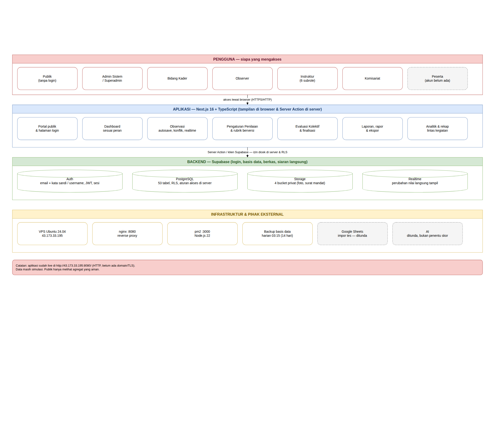
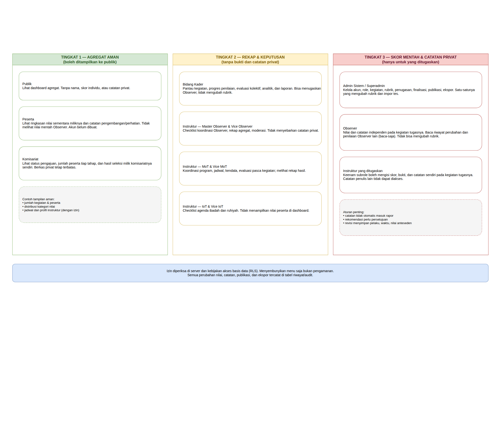
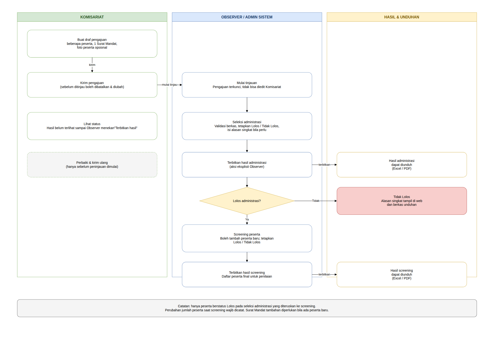
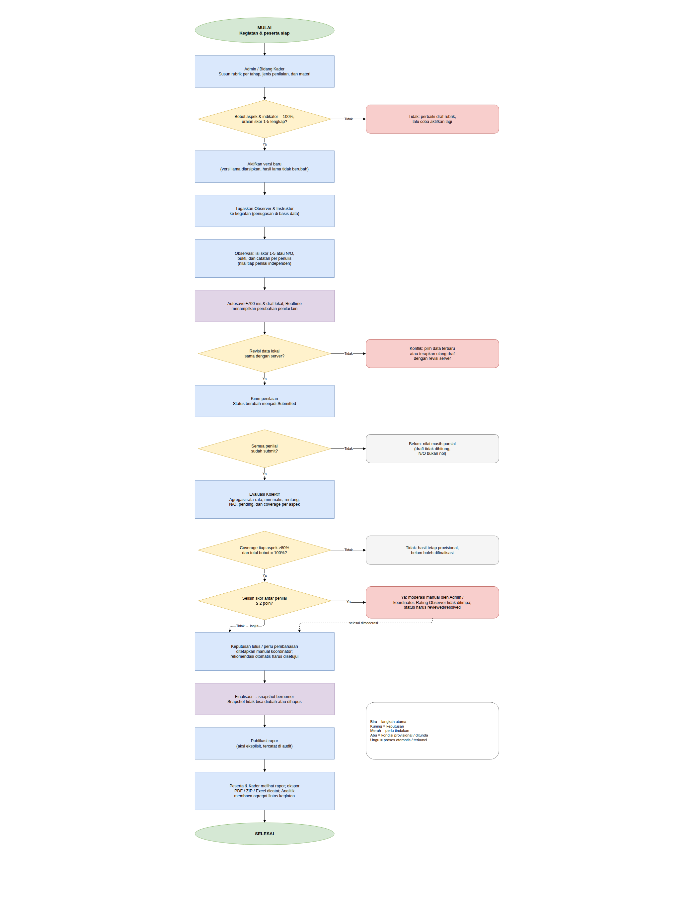
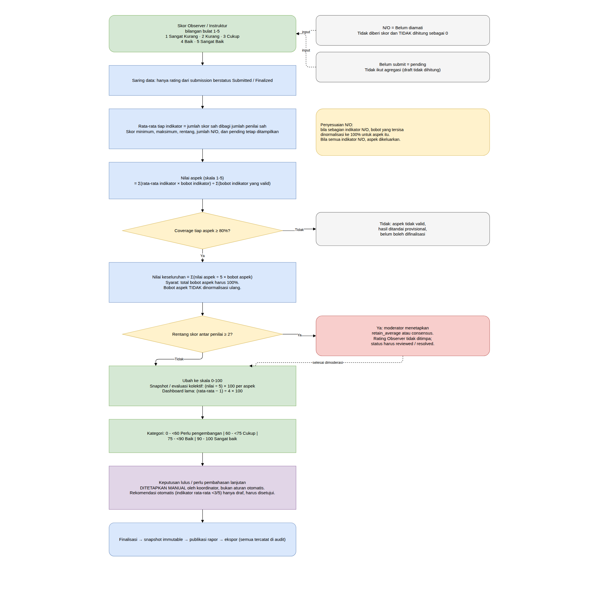
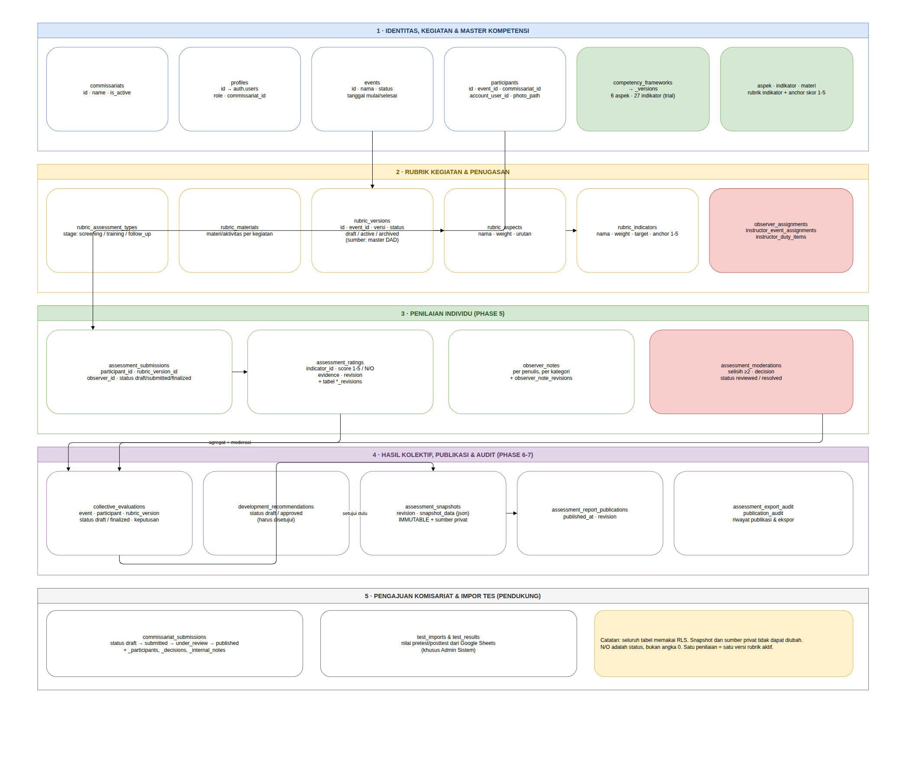
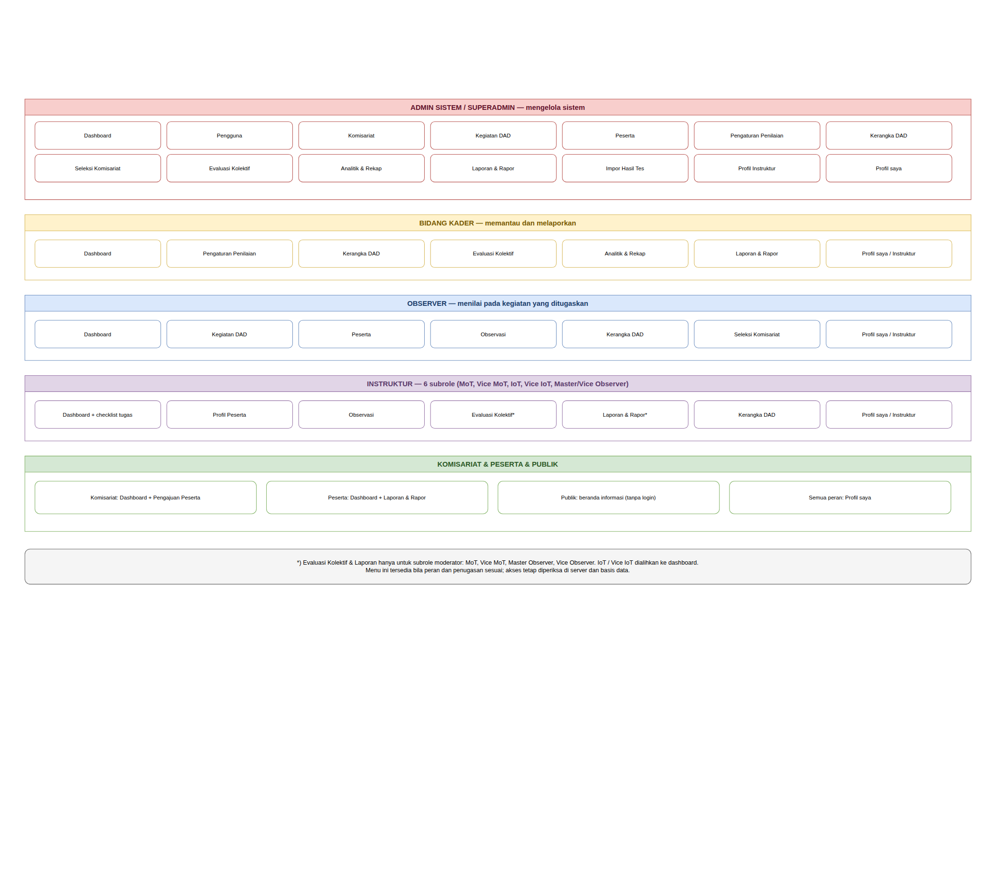

Intinya
Komisariat mengajukan peserta, Observer menyeleksi, Observer dan Instruktur memberi nilai secara independen, hasilnya digabung dan dimoderasi, lalu koordinator menetapkan keputusan. Rapor hanya bisa dibuka setelah hasil difinalisasi dan diterbitkan. Publik melihat angka agregat tanpa identitas.
1. Arsitektur sistem
Aplikasi ini dibangun dari apa, dan siapa yang mengaksesnya?


2. Peran dan batas akses
Siapa boleh melihat data agregat, rekap, dan data mentah?


3. Alur pengajuan dan seleksi peserta
Bagaimana peserta masuk sampai dinyatakan lolos screening?


4. Alur penilaian hingga rapor
Bagaimana nilai diamankan sampai rapor bisa dibuka?


5. Aturan perhitungan skor
Bagaimana angka 0-100 dan kategori nilainya dihitung?


6. Model data
Di mana data disimpan dan bagaimana tabelnya saling terhubung?


7. Peta halaman per peran
Menu apa yang tersedia untuk setiap peran?
